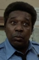
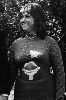

Country:United States, 78 minutes
Spoken languages:English
Genres:Animation, Comedy, Drama
Director(s):Ralph Bakshi
Writer(s):Ralph Bakshi
Video Codec:Unknown
Number: 2465


Certification:NC-17
Storyline:
A swinging, hypocritical college student cat raises hell in a satirical vision of the 1960s.
Cast:  

Medium: Original DVD,
Loaned: No
Aspect ratio: Unknown